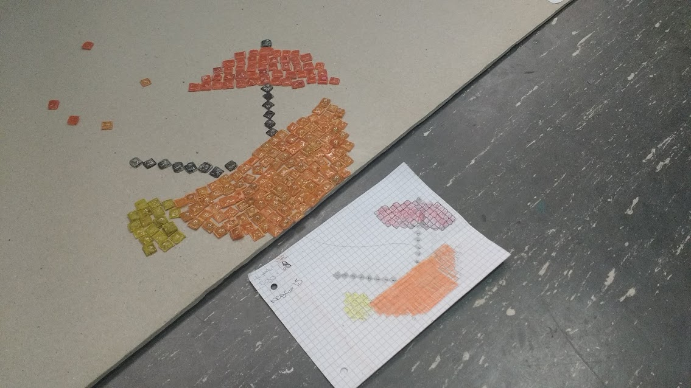

Trabajamos la técnica del mosaico mediante instancias más cercanas a los adolescentes como el pixel art y la estética 8 bit. También nos permitió reflexionar acerca de los diferentes formatos de arte público, estudiando el caso del artista Invader. Finalmente, comprendimos las características de las imágenes de mapa de bits y su diferencia con las vectoriales.
Desarrollar el pensamiento visual.
Experimentar y comprender la intervención en vía pública como formato artístico.
Adquirir habilidades y conocimientos sobre la técnica del mosaico a través de la fusión de plástico
Miramos los primeros 10 minutos del documental Exit trough the gift shop como introducción al artista Invader y a la intervención callejera en general (sus diferentes técnicas, modos de accionar). Para reflexionar acerca de la producción, exhibición y noción de propiedad de la obra en torno al arte público también observamos el documental Saving Banksy. Finalmente, se propuso la apreciación y el análisis de creaciones de Invader.
Cada un@ de l@s estudiantes definió qué imagen producir, realizó su boceto a escala en una hoja cuadriculada. Después, produjimos las teselas con cd’s, lo que implicó una tarea bastante ardua: retirar la película grabada, limpiar los restos de cinta adhesiva, medir y copiar los cuadrados a cortar, pintarlos y finalmente hornearlos. Por último, después de pintar la base para nuestro "mini-mosaico-móvil", pegamos las teselas siguiendo el boceto.
Vimos algunas obras de intervencion del espacio publico como Space Invaders blabla